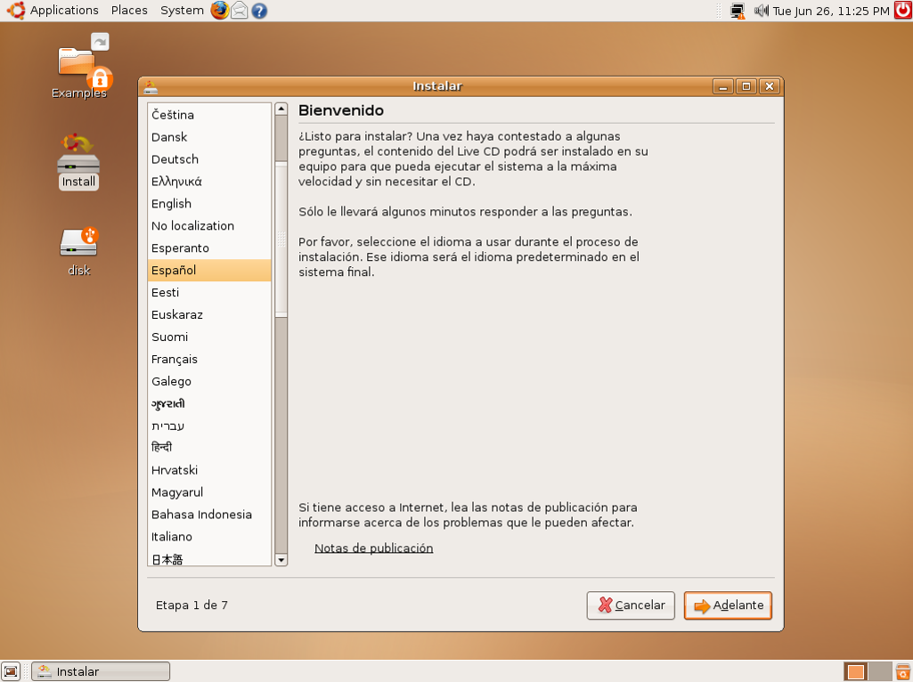
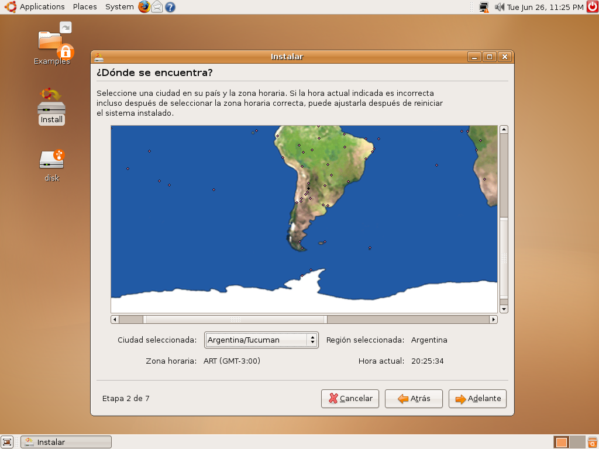
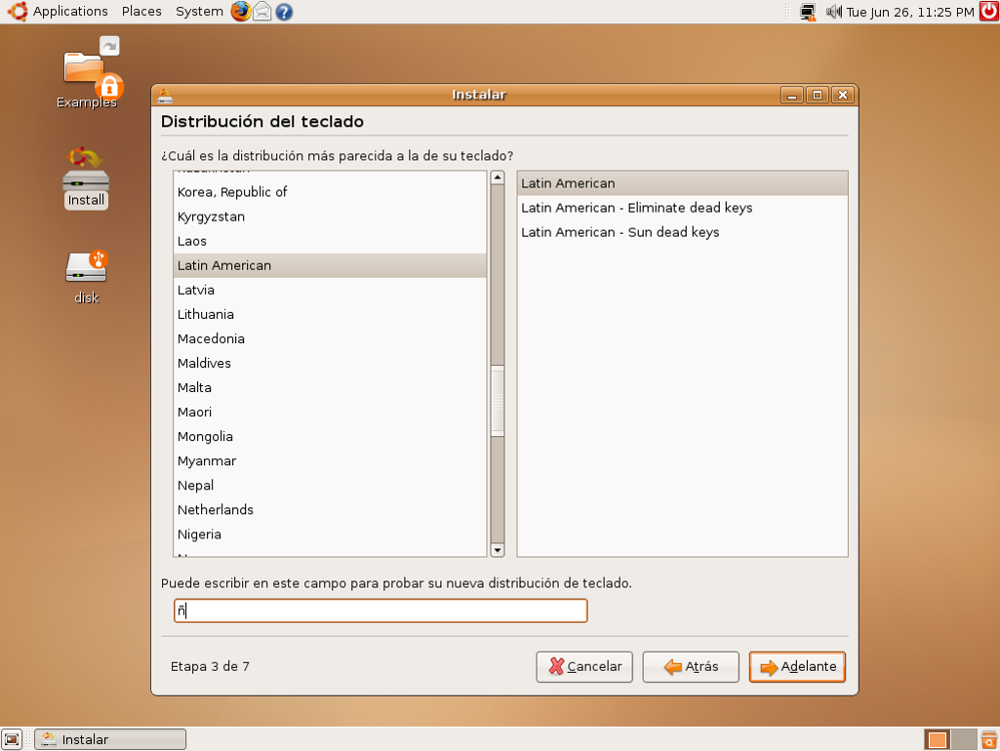
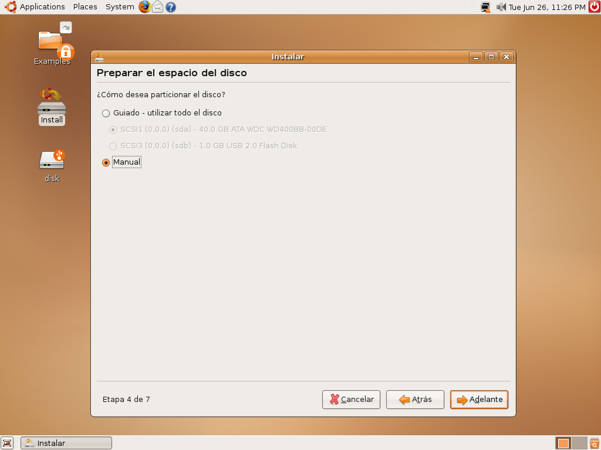
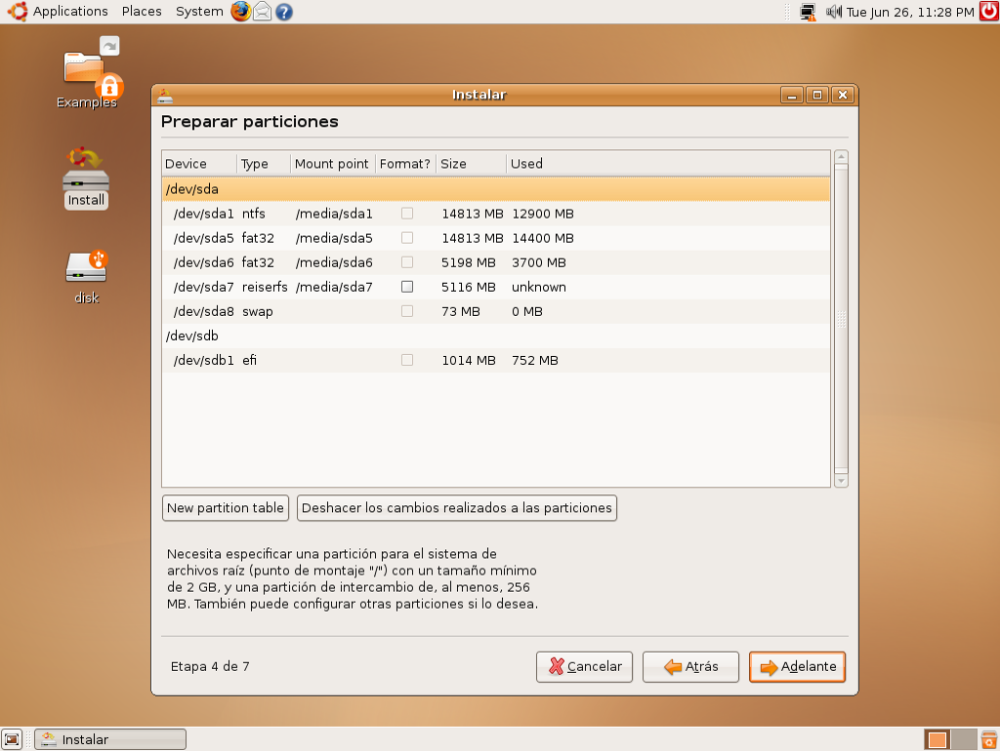
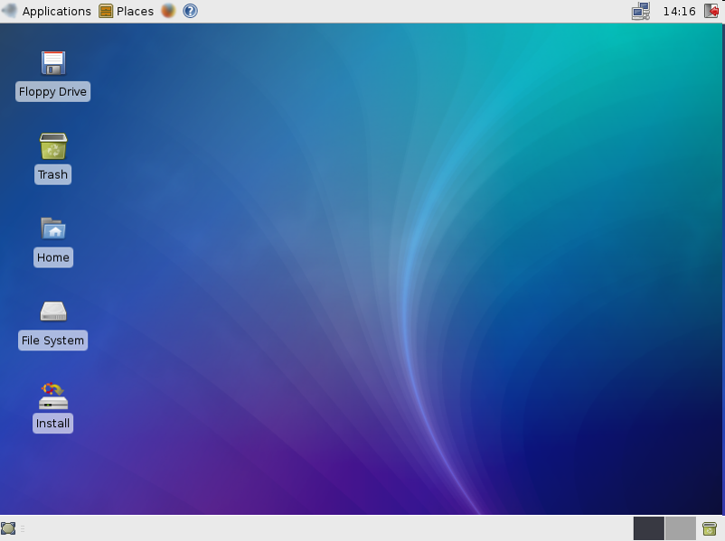

Sistemas operativos II
Ubuntu
Javier Lizarraga

UBUNTU
”Linux para Seres Humanos”
Ubuntu es una distribución Linux enfocado computadoras de escritorio aunque también proporciona soporte para servidores. esta Basada en Debian GNU/Linux, concentra su objetivo en la facilidad de uso, la libertad en la restricción de uso y la facilidad en la instalación.
El nombre de la distribución proviene del concepto zulú y xhosa de ubuntu, que significa "humanidad hacia otros".
Es patrocinado por Canonical Ltd., una empresa privada fundada y financiada por un empresario sudafricano.
OBJETIVO
Hacer de Linux un sistema operativo más accesible y fácil de usar
CARACTERISTICAS
- Basada en la distribución Debian.
- Disponible en 4 arquitecturas: Intel x86, AMD64, PowerPC, SPARC
- Las versiones estables se liberan cada 6 meses.
- La nomenclatura de las versiones no obedece principalmente a un orden de desarrollo,
- El entorno de escritorio oficial es Gnome
- El navegador web oficial es Mozilla Firefox
- Mejorar la accesibilidad y la internacionalización.
- Todos los lanzamientos de Ubuntu se proporcionan sin costo alguno
- Sistema de gestión de paquetes Synaptic y apt.
VARIANTES
Existen diversas variantes de Ubuntu disponibles, las cuales poseen lanzamientos simultáneos con Ubuntu. Las más significativas son:
Kubuntu, el cual utiliza KDE en vez de GNOME.
Edubuntu, diseñado para entornos escolares.
Xubuntu, el cual utiliza el entorno de escritorio Xfce.
COMPIZ
Compiz es uno de los primeros Gestores de ventana de composición para el sistema de ventanas X Window que es capáz de aprovechar la aceleración OpenGL. Fue presentado por Novell en enero de 2006 junto con Xgl. La integración le permite realizar efectos de composición en el manejo de ventanas, como un efecto de minimización y una vista en forma de cubo del espacio de trabajo.
INSTALACION DE UBUNTU
INSTALACION DE UBUNTU
INSTALACION DE UBUNTU
INSTALACION DE UBUNTU
INSTALACION DE UBUNTU
XUBUNTU
La Promesa de Ubuntu
- Ubuntu siempre será gratuito, incluyendo versiones empresariales y actualizaciones de seguridad.
- Ubuntu viene con soporte comercial completo de Canonical y cientos de compañías en todo el mundo.
- Ubuntu incluye las mejores infraestructuras de traducción y accesibilidad que el software libre tiene para ofrecer.
- Los CDs de Ubuntu contienen solo aplicaciones de software libre; te alentamos a que uses software libre y de código abierto, lo mejores y lo pases.
Las versiones de Ubuntu
En octubre de 2004, Ubuntu lanzo su primera versión, Una nueva versión de Ubuntu es lanzada cada 6 meses y las actualizaciones para nuevos lanzamientos son libres de cargos osea gratis. Los usuarios son alentados a actualizarse con cada nueva versión para disfrutar de las ultimas características y aplicaciones, estas versiones son llamadas usando el esquema:
A.MM (nombre), donde A indica el año y MM se refiere el mes de lanzamiento, el nombre entre paréntesis es el nombre código que se le da a la versión de pre-lanzamiento.
A cada lanzamiento se le da soporte por 18 meses, los lanzamientos de soporte extendido se les da soporte de 3 años en el escritorio y 5 años en servidores.
Ubuntu y Microsoft Windows : Diferencias
- El código abierto difiere del modelo de software propietario en:
- Alienta la personalización y modificación en oposición al modelo “una talla le queda a todos”.
- Se basa en un modelo de negocios de “servicios adjuntos” en lugar de las de base de licencias.
- Cree que los beneficios de la colaboración y colaboración de múltiples desarrolladores
- superan aquellos proyectos de trabajo controlados por pequeños equipos de desarrollo pagados.